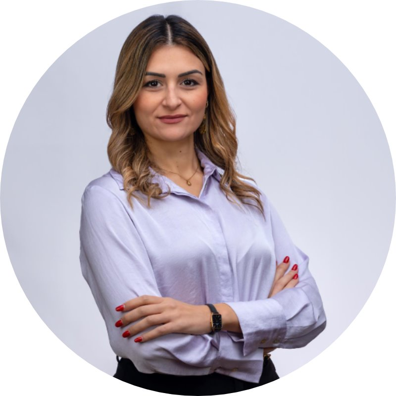
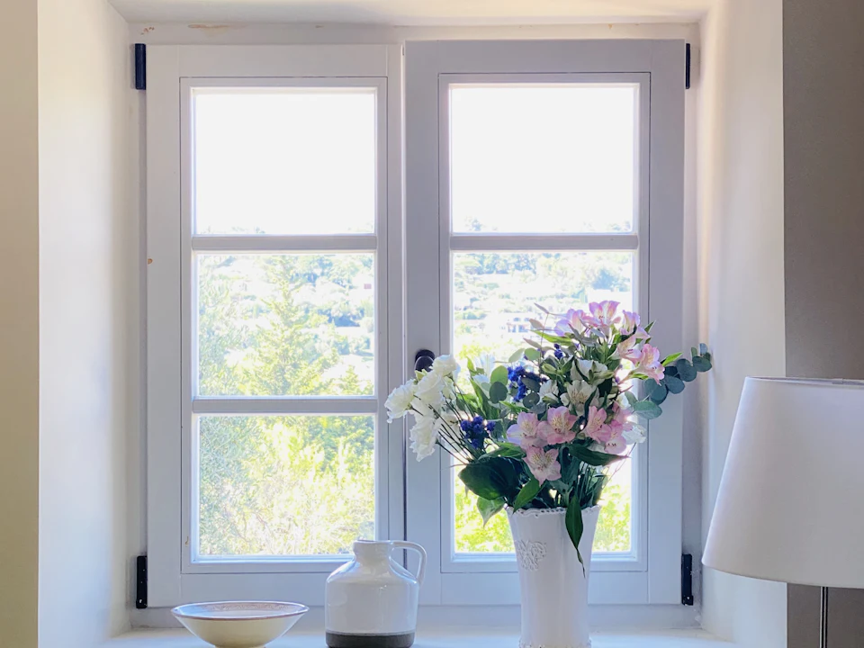
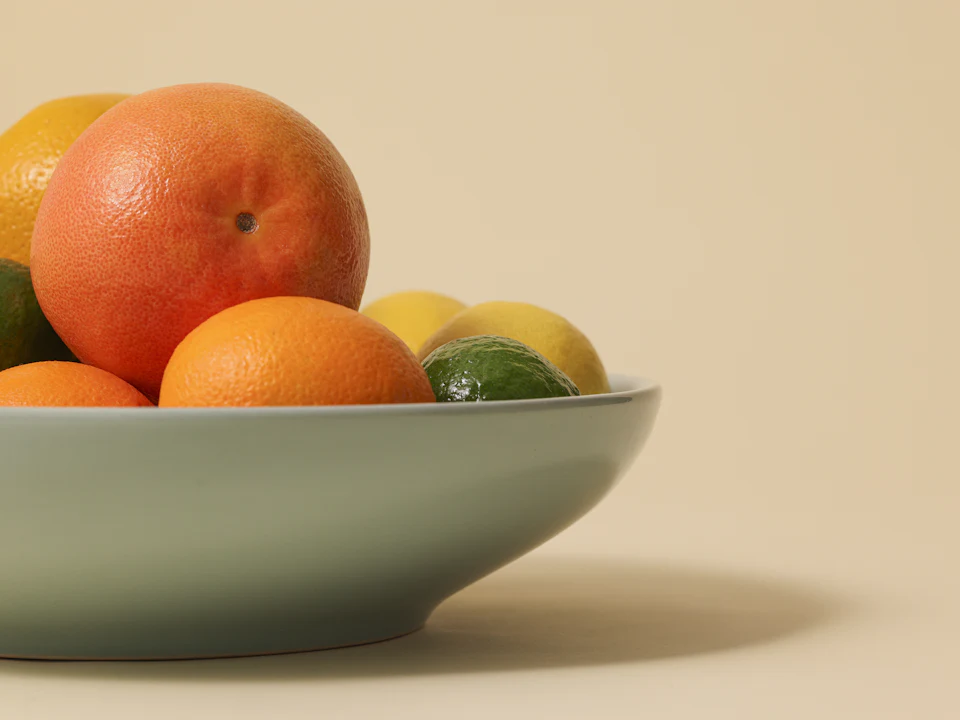

Difficoltà emotive
Per chi sta attraversando periodi di ansia, stress, difficoltà nella gestione delle emozioni o cambiamenti dell'umore e desidera comprendere meglio ciò che vive.
Psicologia · Psicoterapia · Benessere
Un percorso di ascolto e consapevolezza per affrontare le difficoltà, ritrovare le tue risorse e costruire nuove possibilità di cambiamento.
Consulenze psicologiche e percorsi di psicoterapia a Cagliari e online.

Chi sono
Sono la Dott.ssa Ilaria Picci, psicologa e psicoterapeuta, specialista in Psicologia della Salute.
Nel mio lavoro accompagno le persone che attraversano momenti di difficoltà, cambiamento o ricerca di un nuovo equilibrio, offrendo uno spazio di ascolto, comprensione e riflessione.
Mi sono laureata in Psicologia Clinica presso l'Università degli Studi di Padova nel 2020 e sono iscritta all'Ordine degli Psicologi della Sardegna, Albo A, n. 3476, dal 2021.
Ho successivamente approfondito la mia formazione con la specializzazione in Psicologia della Salute presso l'Università degli Studi di Cagliari, maturando esperienze in diversi contesti clinici, ospedalieri e sociosanitari. Mi occupo inoltre di ricerca e promozione della salute e sono coautrice di una pubblicazione scientifica del 2025 sul progetto “Guess Your Health”.
Il mio interesse professionale nasce dal desiderio di comprendere come le persone attribuiscono significato alle proprie esperienze e come affrontano le trasformazioni della vita.
Credo nel valore dei processi graduali, degli obiettivi condivisi e di quei piccoli cambiamenti che, nel tempo, possono aprire nuove possibilità.
Nel mio lavoro integro attività clinica, promozione della salute e attenzione alla ricerca, per costruire percorsi personalizzati e rispettosi dell'unicità di ogni persona.
A chi mi rivolgo
Ci sono momenti in cui fermarsi, comprendere ciò che stiamo vivendo e chiedere supporto può diventare un passo importante.
Per chi sta attraversando periodi di ansia, stress, difficoltà nella gestione delle emozioni o cambiamenti dell'umore e desidera comprendere meglio ciò che vive.
Per chi affronta una diagnosi, una condizione di salute complessa, il dolore cronico, un lutto o cambiamenti che coinvolgono il proprio benessere psicofisico.
Per chi vive transizioni personali, lavorative o relazionali, desidera acquisire maggiore consapevolezza e costruire un rapporto più equilibrato con sé stesso.
Approccio
Un approccio integrato che considera la persona nella sua complessità.
Uno spazio professionale in cui potersi esprimere senza giudizio e dare significato alle proprie esperienze.
Riconoscere pensieri, emozioni e comportamenti che influenzano il modo di vivere le situazioni quotidiane.
Considerare il rapporto tra esperienza emotiva, percezioni corporee e salute psicofisica.
Dare valore anche ai piccoli passaggi, definendo insieme gli obiettivi, senza imporre tempi o aspettative irrealistiche.
Ogni percorso nasce dall'incontro tra le esigenze della persona, le sue risorse e obiettivi condivisi.
Servizi
Proposte di supporto psicologico e psicoterapeutico costruite sulle esigenze della persona.

Psicologia della salute
Un supporto per affrontare la comunicazione di una diagnosi di malattia, convivere con il dolore cronico ed elaborare il lutto. Insieme diamo spazio alle emozioni che questi momenti portano con sé e cerchiamo nuove modalità di adattamento e di cura di sé.
Psicoterapia individuale
Percorsi di psicoterapia per i disturbi legati alla sfera dell'umore, come il disturbo bipolare I e II e la depressione; per i disturbi d'ansia e gli attacchi di panico; per i disturbi di personalità, in particolare il disturbo ossessivo-compulsivo.

Psicologia e alimentazione
Un percorso per acquisire abitudini salutari, come avviare un percorso nutrizionale o praticare attività fisica, in collaborazione con la Dott.ssa Federica Fulghesu, Biologa Nutrizionista. È rivolto a chi desidera:
Crescita personale
Uno spazio per attraversare i cambiamenti lavorativi, familiari e relazionali: comprendere i propri bisogni, riconoscere le risorse personali e orientarsi con maggiore consapevolezza nelle nuove fasi della vita.
Come funziona
Ogni percorso inizia da uno spazio di ascolto e dalla possibilità di comprendere insieme le tue esigenze.
Puoi contattarmi per richiedere informazioni sulle modalità delle consulenze e sulla disponibilità degli appuntamenti.
Un primo incontro dedicato all'ascolto della tua richiesta e alla comprensione delle difficoltà o degli obiettivi che desideri affrontare.
Definiamo insieme le priorità, valorizzando i tuoi bisogni, le tue risorse e le modalità di lavoro più adatte a te.
Il lavoro prosegue nel rispetto dei tuoi tempi, dando valore a ogni passo e rivedendo insieme gli obiettivi quando serve.
Dove ricevo
Puoi intraprendere il tuo percorso in presenza a Cagliari oppure online.
In studio
Via Stanislao Caboni 10
Cagliari
Online
Ovunque tu sia
FAQ
La prima consulenza è uno spazio che dedico all'ascolto della tua richiesta. Mi permette di iniziare a comprendere insieme a te le difficoltà che stai vivendo e gli obiettivi che vorresti raggiungere.
Sì, ricevo anche online. Concordo con te le modalità in base alle tue esigenze e valuto insieme a te se questa modalità è appropriata per il tuo percorso.
Non necessariamente. Accolgo anche chi desidera comprendersi meglio, affrontare un cambiamento o dedicare maggiore attenzione al proprio benessere psicologico.
Non esiste una durata identica per tutte le persone: la valuto insieme a te in base alle tue esigenze, agli obiettivi che condividiamo e all'evoluzione del percorso.
Puoi scrivermi tramite il modulo qui sotto, chiamarmi al 327 559 6032 oppure inviarmi un'email a ilariapicci.psicologa@gmail.com: ti risponderò con le informazioni sulla disponibilità e sulle modalità di consulenza.
Contatti